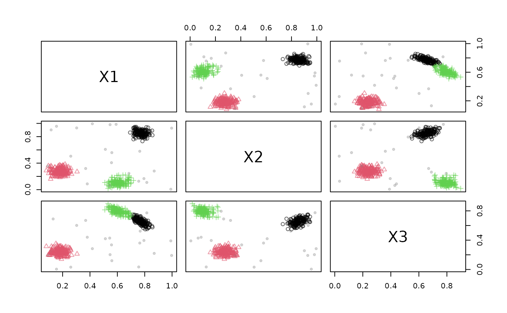
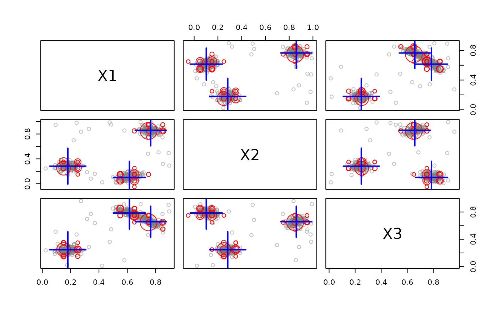
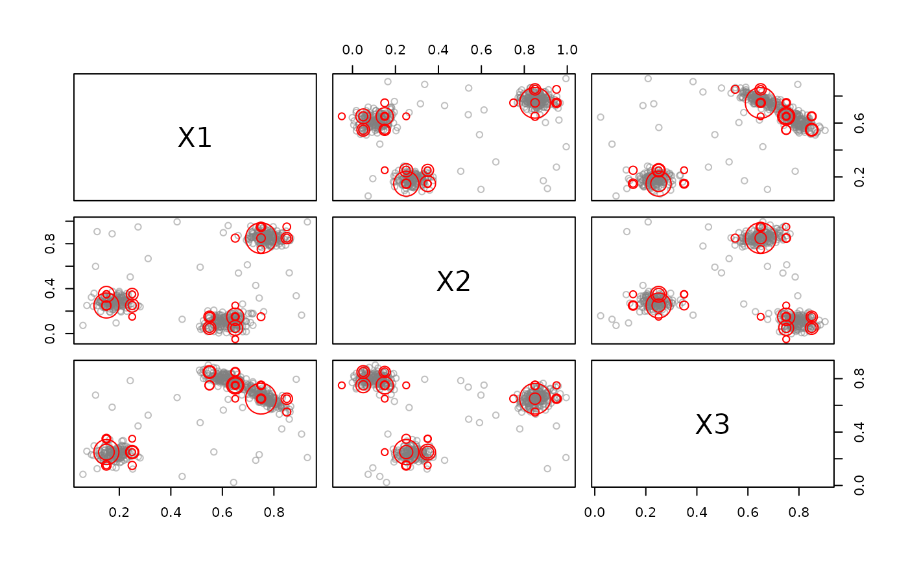
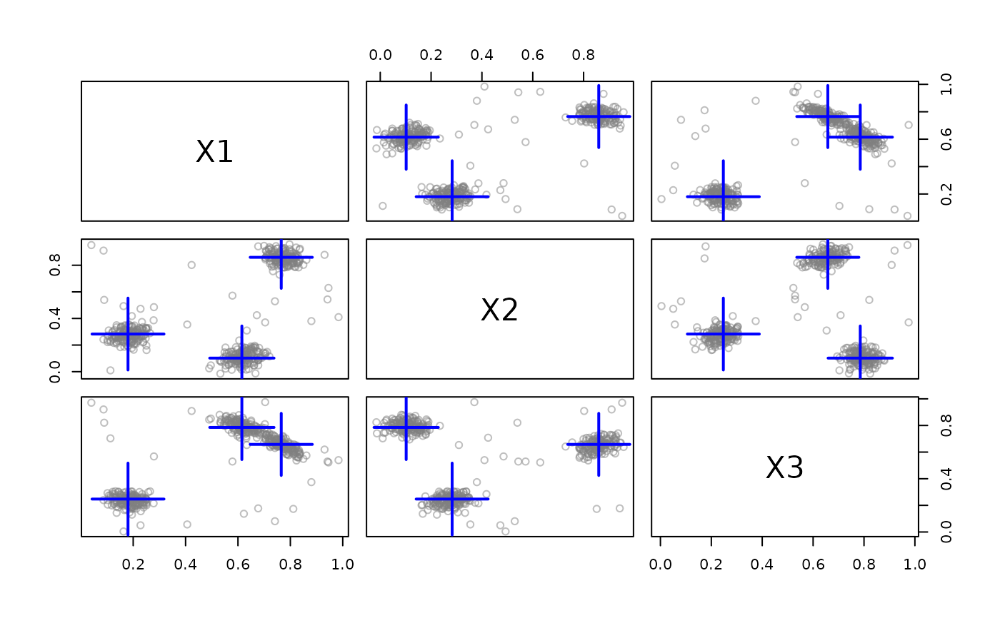
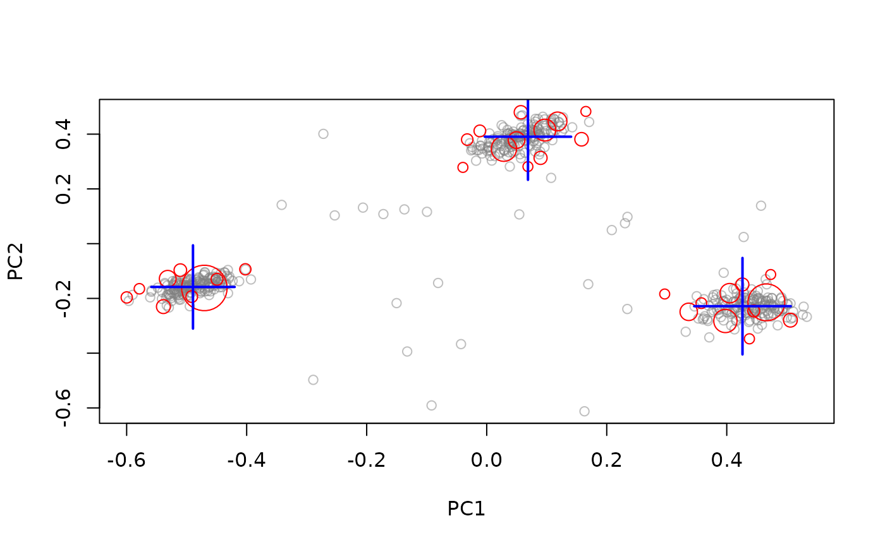
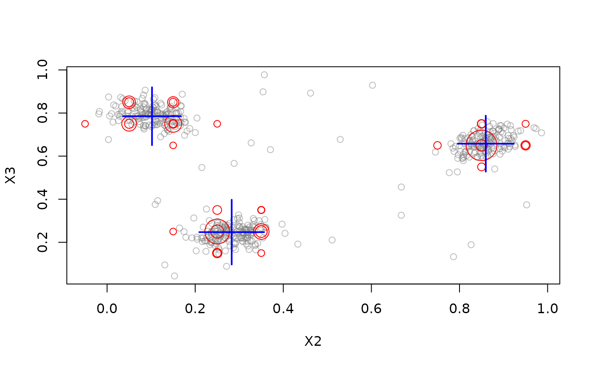
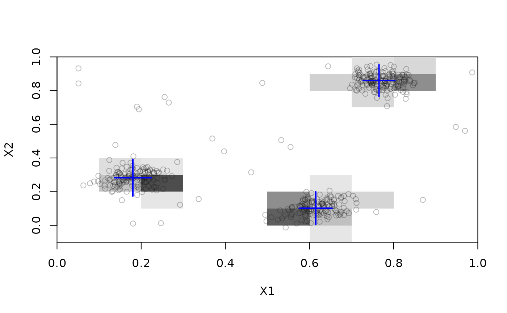
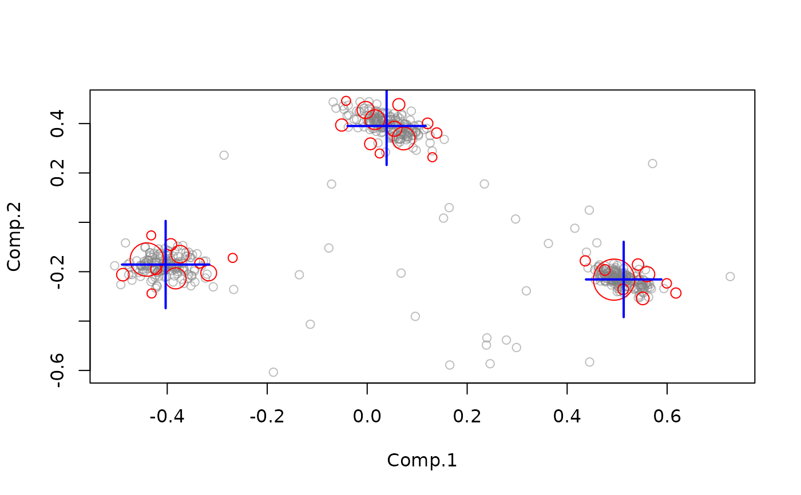

Method to plot the result of data stream data clustering. To plot DSD see plot.DSD().
Usage
# S3 method for class 'DSC'
plot(
x,
dsd = NULL,
n = 500,
col_points = NULL,
col_clusters = c("red", "blue", "green"),
weights = TRUE,
scale = c(1, 5),
cex = 1,
pch = NULL,
method = c("pairs", "scatter", "pca"),
dim = NULL,
type = c("auto", "micro", "macro", "both", "none"),
assignment = FALSE,
transform = NULL,
...
)Arguments
- x
the DSC object to be plotted.
- dsd
a DSD object to plot the data in the background.
- n
number of plots taken from
dsdto plot.- col_points, col_clusters
colors used for plotting.
- weights
if
TRUEthen the cluster weight is used for symbol size. Alternatively, a vector with the size of the symbols for micro- and macro-clusters can be supplied.- scale
range for the symbol sizes used.
- cex
size factor for symbols.
- pch
symbol type for points.
- method
method used for plotting:
"pairs"(pairs plot),"scatter"(scatter plot),"pca"(plot first 2 principal components).- dim
an integer vector with the dimensions to plot. If
NULLthen for methodspairsand"pca"all dimensions are used and for"scatter"the first two dimensions are plotted.- type
Plot micro clusters (
type = "micro"), macro clusters (type = "macro"), both micro and macro clusters (type = "both").- assignment
logical; show assignment area of micro-clusters.
- transform
a function that maps data stream points onto a 2-D plane for plotting.
- ...
further arguments are passed on to
graphics::plot.default()orgraphics::pairs(). graphics.
See also
Other DSC:
DSC(),
DSC_Macro(),
DSC_Micro(),
DSC_R(),
DSC_SlidingWindow(),
DSC_Static(),
DSC_TwoStage(),
animate_cluster(),
evaluate.DSC,
get_assignment(),
predict,
prune_clusters(),
read_saveDSC,
recluster()
Other plot:
animate_cluster(),
animate_data(),
plot.DSD()
Examples
stream <- DSD_Gaussians(k = 3, d = 3, noise = 0.05)
## Example 1: Plot data
plot(stream)

## Example 2: Plot a clustering
dstream <- DSC_DStream(gridsize = 0.1)
update(dstream, stream, 500)
dstream
#> D-Stream
#> Class: DSC_DStream, DSC_Micro, DSC_R, DSC
#> Number of micro-clusters: 32
#> Number of macro-clusters: 3
plot(dstream, stream)

## plot micro or macro-clusters only
plot(dstream, stream, type = "micro")

plot(dstream, stream, type = "macro")

## plot projected on the first two principal components
## and on dimensions 2 and 3
plot(dstream, stream, method = "pca")

plot(dstream, stream, dim = c(2, 3))

## D-Stream has a special implementation to show assignment areas
plot(dstream, stream, assignment = TRUE)

## Example 4: Use a custom transformation for plotting.
## We fit PCA using 100 points and create a transformation
## function to project the stream to the first two PCs.
pr <- princomp(get_points(stream, n = 100, info = FALSE))
trans <- function(x) predict(pr, x)[, 1:2 , drop = FALSE]
trans(get_points(stream, n = 3))
#> Comp.1 Comp.2
#> [1,] 0.02181325 0.3716543
#> [2,] 0.12286374 0.2548326
#> [3,] -0.07923565 -0.4639676
plot(dstream, stream, transform = trans)
